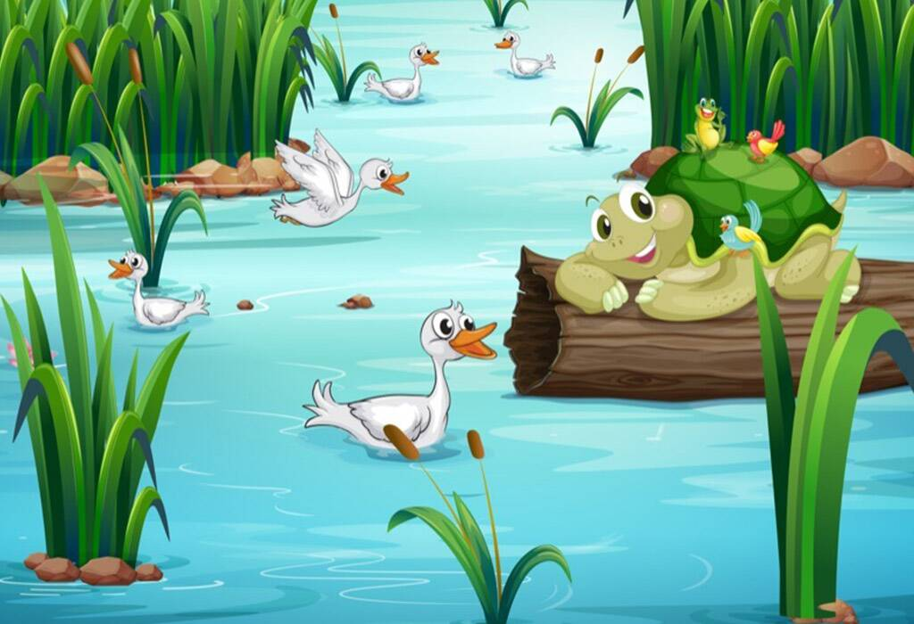

The Tortoise and the Geese
The Tortoise and the Geese Once upon a time, beside a lake, there lived a tortoise and two geese who were great friends. As the lake was drying, the geese decided to migrate to a new place. The tortoise also wanted to move with them, but he couldn’t fly, and so he pleaded the geese to take him with them. After trying really hard to convince them, finally, the geese agreed. They held a stick with their beaks and asked the tortoise to hold the stick with his mouth, warning him to not open his mouth and let go of the stick.As they flew high, some onlookers thought that the tortoise was kidnapped and commented: “Oh, the poor tortoise!” This angered the tortoise and he immediately opened his mouth to say something back. As soon as he did, he fell to the ground and died.
Moral of the Story: Think before you speak. Listen to instructions, and follow them.